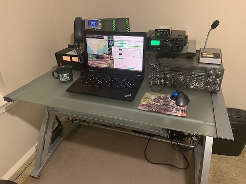
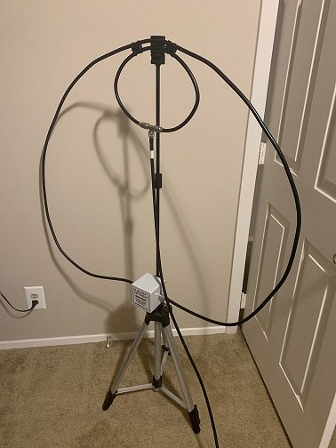

Transceiver — portable
Yaesu FT-897D
HF through UHF in one box, happy on internal batteries or external DC. The workhorse for every activation since day one.
Augusta, Georgia · USA
Collin Pike
ex-KJ4AXB / KJ4AXB/VP9 · EM83vk · Parks on the Air activator
Licensed since 2007, on the air before I was five. Former D-STAR administrator, twice a speaker at the Dayton Hamvention Youth Forum, and an accredited Volunteer Examiner across more than 4,600 exam sessions. These days you will mostly find me at a picnic table working FT8 from a state park.
About the operator
Licensed as KJ4AXB, now WE4RR — using the hobby the way it works best for me: weak-signal digital, in the field, with a small footprint.
I have been a ham since 2007, and I got my start in amateur radio before I was even five years old. In 2011 I became one of the world’s youngest D-STAR administrators — helping oversee more than twenty D-STAR repeaters, managing their operating systems, and lending a hand with repeater cabinet installations.
I have also had the privilege of speaking twice at the Dayton Hamvention Youth Forum. The first talk was about operating HF while travelling internationally; the second covered D-STAR and other digital modes.
After some time away from the hobby I became active again, and these days the centre of gravity is Parks on the Air. In 2022 alone I logged upwards of six thousand FT8 contacts on the FT-897D and the Alpha Antenna MagLoop, and passed ten thousand contacts inside a single year — no tower, no beam, just a loop on a tripod and a lot of patience. I have been activating parks since April 2023, starting in the Mid-Atlantic and now working out of Georgia, where Mistletoe State Park is my home park.
On 24 December 2024 I changed my callsign from KJ4AXB to WE4RR — to reflect a lifelong passion for railroads. I have also been lucky enough to operate as KJ4AXB/VP9 from Bermuda.
I am an accredited VE for ARRL, Laurel, and W5YI, and have taken part in more than four thousand six hundred amateur radio examination sessions. If you are testing in the area, or thinking about upgrading, come and find me.
The station
The whole portable setup — radio, antenna, power, and interface — travels in a single weatherproof case.
Transceiver — portable
HF through UHF in one box, happy on internal batteries or external DC. The workhorse for every activation since day one.
Transceiver — home
The big desk radio. A 1980s classic with a receiver that still holds its own, and the reason the shack sounds like a shack.
Power — home
Linear 20-amp supply with meters on the front. Unglamorous, unkillable, and it never puts a whisper of hash on the band.
Antenna
10–40 m portable magnetic loop rated to 100 W. Tripod-mounted, no radials, no trees required — which is exactly what a park picnic area calls for.
Power — field
Lithium power station that comfortably outlasts a full afternoon of digital operating without a generator or an idling engine.
Digital interface
SignaLink at home, the much smaller DigiRig Mobile when pack space matters. Both handle audio and PTT over a single USB run.
Computer
Rugged, repairable, and cheap enough that a rainstorm at a picnic table is not a catastrophe. Runs the whole digital stack.
Transport
Weatherproof protective case holding the rig, interface, and cabling. Grab it, and the station is packed.
Field notes on the loop: The MagLoop will take 50 W of FT8 happily across most of its range. Down low the ALC starts to complain, and on 80 m the smaller loop realistically limits you to 10–20 W. It is a fair trade for an antenna that deploys in minutes and needs no supports at all.


Parks on the Air
Pulled live from the POTA API each time this page loads — so it is never out of date.
| Date | Ref | Park | Loc | QSOs |
|---|---|---|---|---|
| Loading activation log… | ||||
Hunter
Chasing activators from home across 1175 hunter QSOs.
Endorsements
Mostly 20 m and 40 m, overwhelmingly DATA and FT8.
Top tier reached
Sapphire Activator and Sapphire Hunter — the full ladder from Bronze up.
Before Georgia, the loop went up all over the Mid-Atlantic — Maryland, DC, Delaware, New Jersey, West Virginia, Kentucky, Indiana, and Ohio. These are the original K- references from those years, including a five-fer afternoon in DC.
Full activation history, park-by-park breakdown, and hunter log live on my POTA profile.
From the field
Picnic tables, tripods, and the occasional rain shower — the places the loop has been set up.
On video
Walk-throughs of how the station goes together in the field, from case to first contact.
More on the KJ4AXB Adventures channel.
Right now
A live view from HamAlert — if I have been spotted recently, it shows up here.
Recognition
POTA awards load live below. Alongside them sit QRZ’s World Continents Award, USA Award, DX World Award, Grid Squared Award, and Master of Radio Communication for both North America and Europe.
The collection
Cards that have arrived over the years, rotating one at a time. Click any card to see it full size, then arrow through the whole collection.
Check the log
The most recent contacts in my Club Log, straight from their servers.
Nothing there yet? Logs are uploaded after each session — try again shortly, or check LoTW.
Confirming the contact
After every contact my log goes up to LoTW, Club Log, the QRZ Logbook, and eQSL. Paper cards are always welcome — send one with an SASE and I will gladly send one back.
WE4RR — the callsign asked for a railroad, so it got one. Rock Island E-unit 6147 on the trestle, alphabet blocks, and a crossing buck. If you work me, this is what lands in your mailbox.
Graphics by KJ4AXF · click to enlarge
Every log is uploaded to LoTW, Club Log, the QRZ Logbook, and eQSL after every session.
Send a card with a Self-Addressed Stamped Envelope and I will gladly send one back. The mailing address is on my QRZ page.
Bureau cards are collected and answered in batches. Slower, but they all get a reply.
The most reliable way to reach me is through the email address on my QRZ profile. If we worked a park together and something looks wrong in the log, please do get in touch — I would much rather fix it than leave you chasing a confirmation.